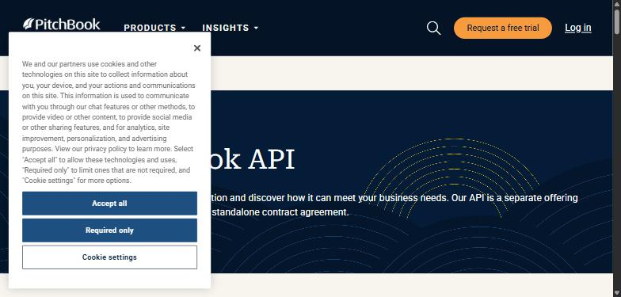
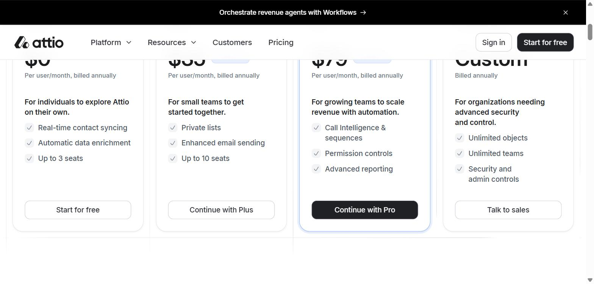
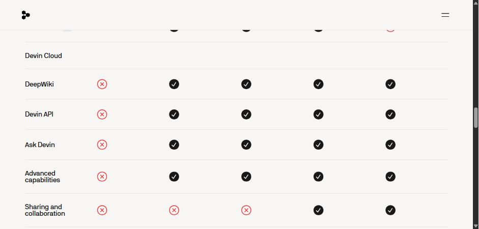
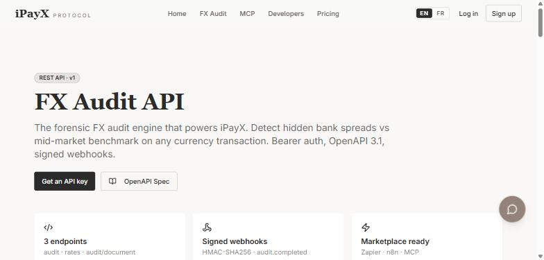
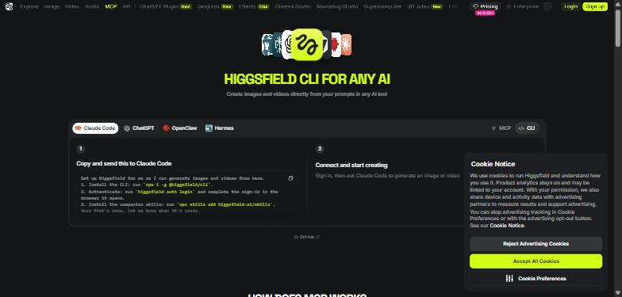

An agent researched every app's auth, self-serve path, API surface and MCP status, with evidence links. A judge checked every quote against the cited page, registries and live probes voted on each field, and a hand-labelled gold set measured how accuracy moved. Patterns first; the table is below.
Self-serve credentials, documented REST/GraphQL, standard auth. Ranked by buildability score.
What to ask for, per app.
Every cell is the merged result of registries, live probes and the research pass, after quote-grounding. Evidence chips link to the cited page: green = quote found on the page, struck = quote not found, teal = registry or probe. Confidence is computed from source agreement × grounding × model self-report. Click a column header to sort.
| App | Category | Auth | Access | API | MCP | In Composio | Verdict · blocker | Conf. | Evidence |
|---|---|---|---|---|---|---|---|---|---|
| SalesforceSalesforce is a CRM/sales platform with an extensive suite of official REST, SOAP, Bulk, Metadata, and GraphQL | CRM | API key Bearer token JWT OAuth2 Other | Self-serve (free) | REST + GraphQLlarge | official ↗ | ✓223 tools | GreenNone | 0.75 | acce auth auth auth mcp mcp docs |
| HubSpotHubSpot is a CRM and sales/marketing platform with a broad REST (plus supplementary GraphQL) API for CRM objec | CRM | API key Bearer token OAuth2 | Self-serve (free) | REST + GraphQLlarge | official ↗ | ✓245 tools | GreenNone | 0.90 | auth auth acce api_ mcp mcp docs |
| PipedrivePipedrive is a sales CRM and pipeline-management platform with a broad REST API (OAuth2 or per-user API token) | CRM | API key OAuth2 | Self-serve (trial) | RESTlarge | official ↗ | ✓402 tools | GreenNone | 0.76 | acce api_ mcp mcp verd auth docs |
| AttioAttio is a CRM and relationship-intelligence platform for sales and go-to-market teams, offering a REST API, A | CRM | API key Basic Bearer token OAuth2 | Self-serve (free) | RESTmedium | official ↗ | ✓109 tools | GreenNone | 0.83human: access, blocker | auth auth auth acce mcp mcp docs |
| TwentyTwenty is an open-source CRM (self-hostable or cloud-hosted) offering REST and GraphQL APIs for records and wo | CRM | API key OAuth2 | Self-serve (free) | REST + GraphQLsmall | community ↗ | ✓8 tools | GreenNone | 0.78 | auth auth acce mcp verd auth docs |
| PodioPodio is a customizable work-management/CRM platform (owned by Citrix/Progress) with a REST API covering apps, | CRM | OAuth2 | Self-serve (free) | RESTlarge | none | – | GreenNone | 0.89 | auth auth acce acce api_ api_ docs |
| Zoho CRMZoho CRM is a cloud CRM platform offering a REST API (OAuth2) for managing leads, contacts, deals and workflow | CRM | OAuth2 | Self-serve (free) | RESTmedium | official ↗ | ✓57 tools | GreenNone | 0.94 | auth acce acce acce mcp api_ docs |
| CloseClose is a sales-focused CRM (calling, email, SMS, pipelines) built for inside sales teams. | CRM | API key Basic OAuth2 | Self-serve (trial) | RESTmedium | official ↗ | ✓6 tools | GreenNone | 0.84 | auth auth acce api_ mcp mcp docs |
| CopperCopper is a CRM built for Google Workspace users, offering pipeline, contact, and sales-opportunity management | CRM | API key OAuth2 | Self-serve (trial) | RESTmedium | community ↗ | – | GreenNone | 0.77 | auth acce acce api_ mcp verd docs |
| DealCloudDealCloud is an enterprise deal/relationship-management CRM (used by PE, IB, and M&A firms) offering a REST AP | CRM | API key Bearer token OAuth2 | Admin / app review | RESTmedium | community ↗ | – | YellowEnterprise only | 0.83 | auth auth acce acce verd mcp docs |
| ZendeskZendesk is a customer service/helpdesk platform (tickets, help center, chat, talk) with a documented REST API | Support | API key Basic OAuth2 | Self-serve (trial) | RESTlarge | community ↗ | ✓452 tools | GreenNone | 0.90 | auth auth auth acce api_ mcp docs |
| IntercomIntercom is a customer messaging and support platform (helpdesk, live chat, AI agent Fin) with a REST API and | Support | API key OAuth2 | Self-serve (trial) | RESTmedium | official ↗ | ✓133 tools | YellowPaid tier only | 0.53 | mcp auth auth acce acce api_ docs |
| FreshdeskFreshdesk is a cloud-based customer support/helpdesk platform (ticketing, omnichannel, automations) by Freshwo | Support | API key Basic | Self-serve (trial) | RESTmedium | community ↗ | ✓178 tools | YellowPaid tier only | 0.77 | auth auth acce acce mcp acce docs |
| FrontFront is a customer communication / shared-inbox helpdesk platform with a REST API for managing conversations, | Support | API key Bearer token OAuth2 | Self-serve (free) | RESTmedium | official ↗ | – | GreenNone | 0.88 | acce auth auth mcp verd api_ docs |
| PylonPylon is a B2B customer support/helpdesk platform (unified Slack/Teams/email/chat ticketing) with a documented | Support | Bearer token Other | Paid plan | RESTmedium | official ↗ | ✓12 tools | YellowPaid tier only | 0.85 | auth acce acce api_ mcp auth docs |
| LiveAgentLiveAgent is a helpdesk/live-chat support platform offering a REST API (v3) for tickets, contacts, and agent o | Support | API key | Self-serve (trial) | RESTunknown | official ↗ | – | GreenNone | 0.85 | auth auth acce api_ mcp mcp docs |
| PlainPlain is a B2B customer support / helpdesk platform (threads, customers, tenants, help center) with a GraphQL | Support | API key Bearer token | Self-serve (trial) | GraphQLsmall | official ↗ | ✓23 tools | GreenNone | 0.91 | auth auth acce acce api_ api_ docs |
| Help ScoutHelp Scout is a customer support helpdesk platform (shared inbox, live chat, knowledge base, and Docs) for sma | Support | OAuth2 | Self-serve (trial) | RESTmedium | community ↗ | ✓129 tools | YellowPaid tier only | 0.77 | auth auth api_ mcp acce acce docs |
| GorgiasGorgias is an e-commerce-focused helpdesk/support platform with a REST API for tickets, customers, macros, and | Support | API key Basic OAuth2 | Self-serve (trial) | RESTsmall | community ↗ | ✓32 tools | GreenNone | 0.71 | auth auth api_ acce api_ acce docs |
| GladlyGladly is an enterprise customer-service/helpdesk platform unifying channels (voice, chat, email, SMS) into a | Support | Basic | Admin / app review | RESTmedium | community ↗ | – | YellowEnterprise only | 0.70 | auth acce acce auth verd api_ docs |
| SlackSlack is a team messaging and collaboration platform with channels, DMs, and a large app/bot ecosystem. | Comms | Bearer token OAuth2 | Self-serve (free) | RESTmedium · 174 ops in spec | official ↗ | ✓167 tools | GreenNone | 0.83human: mcp | acce acce auth auth api_ mcp docs |
| TwilioTwilio is a cloud communications platform providing programmable APIs for SMS, voice, video, email, and messag | Comms | API key Basic | Self-serve (trial) | RESTmedium · 199 ops in spec | official ↗ | – | GreenNone | 0.80 | auth auth auth acce mcp verd docs |
| Zoho CliqZoho Cliq is a team messaging/chat app (channels, DMs, bots, extensions) that exposes a REST API and an offici | Comms | API key OAuth2 | Self-serve (free) | RESTmedium | official ↗ | – | GreenNone | 0.89 | auth acce acce mcp verd auth docs |
| Lark (Larksuite)Lark (Larksuite) is an all-in-one workplace communication and collaboration suite (chat, docs, calendar, appro | Comms | API key Bearer token OAuth2 | Self-serve (free) | RESTlarge | official ↗ | – | GreenNone | 0.63 | api_ mcp auth auth auth acce docs |
| PumblePumble is a team chat/messaging app offering a self-serve REST API (via an installable API addon) plus a first | Comms | API key | Self-serve (free) | RESTsmall | official ↗ | ✓9 tools | GreenNone | 0.89 | acce acce auth api_ mcp verd docs |
| DiscordDiscord is a voice/text/community chat platform with a REST API and Gateway websocket for building bots and in | Comms | Basic Bearer token OAuth2 Other | Self-serve (free) | RESTlarge | community ↗ | ✓28 tools | GreenNone | 0.85 | acce auth auth verd auth mcp docs |
| TelegramTelegram is a cloud-based messaging platform offering a free public Bot API (HTTP/JSON) for building bots and | Comms | API key Other | Self-serve (free) | RESTmedium · 74 ops in spec | community ↗ | ✓18 tools | GreenNone | 0.88 | auth auth auth acce acce api_ docs |
| WhatsApp BusinessWhatsApp Business Platform (Cloud API) lets businesses send/receive WhatsApp messages, templates, and media pr | Comms | API key Bearer token OAuth2 | Self-serve (free) | RESTmedium | community ↗ | ✓57 tools | YellowApp review / admin approval | 0.71 | auth api_ verd acce acce mcp docs |
| AircallAircall is a cloud-based call center and business phone system with click-to-dial, call routing, and CRM integ | Comms | Basic OAuth2 | Paid plan | RESTsmall | community ↗ | – | YellowPaid tier only | 0.71 | auth acce mcp auth acce api_ docs |
| VonageVonage is a cloud communications platform (CPaaS) providing REST APIs for SMS, Voice, Video, Messages, Verify, | Comms | API key Basic JWT | Self-serve (free) | RESTsmall · 3 ops in spec | official ↗ | – | GreenNone | 0.86 | acce acce auth auth mcp verd docs |
| Google AdsGoogle Ads API is Google's programmatic (REST/gRPC) interface for managing Google Ads accounts, campaigns, and | Marketing | API key OAuth2 | Admin / app review | RESTsmall · 23 ops in spec | community ↗ | ✓28 tools | YellowApp review / admin approval | 0.84 | auth auth acce acce api_ verd docs |
| Meta AdsMeta Marketing API lets developers programmatically create, manage, and report on Facebook and Instagram ad ca | Marketing | API key Bearer token OAuth2 | Admin / app review | RESTlarge | community ↗ | ✓56 tools | YellowApp review / admin approval | 0.75 | auth acce api_ verd auth acce docs |
| LinkedIn AdsLinkedIn Marketing Developer Platform (LinkedIn Ads) lets developers manage ad campaigns, creatives, targeting | Marketing | OAuth2 | Admin / app review | RESTsmall · 34 ops in spec | none | ✓28 tools | YellowApp review / admin approval | 0.90 | auth auth auth acce acce acce docs |
| GoHighLevelGoHighLevel is an all-in-one sales/marketing CRM platform (funnels, email/SMS, ads, automation) offering a RES | Marketing | Bearer token OAuth2 | Self-serve (trial) | RESTlarge | official ↗ | ✓218 tools | YellowPaid tier only | 0.79 | auth auth acce mcp api_ acce docs |
| MailchimpMailchimp is an email/marketing automation platform with a REST-based Marketing API for managing audiences, ca | Marketing | API key OAuth2 | Self-serve (free) | RESTlarge | community ↗ | ✓275 tools | GreenNone | 0.77 | auth auth acce verd acce api_ docs |
| KlaviyoKlaviyo is a marketing automation platform (email, SMS, and push) for ecommerce and D2C brands, offering a RES | Marketing | API key OAuth2 | Self-serve (free) | RESTlarge | community ↗ | ✓225 tools | GreenNone | 0.78 | auth auth acce acce verd auth docs |
| systeme.iosysteme.io is an all-in-one funnel builder and marketing platform (funnels, email campaigns, courses, ecommerc | Marketing | API key | Self-serve (free) | RESTmedium | official ↗ | – | GreenNone | 0.83 | auth acce acce mcp api_ verd docs |
| PinterestPinterest is a visual discovery/social platform whose developer API (v5) lets apps manage boards, pins, ads, c | Marketing | OAuth2 | Admin / app review | RESTmedium | community ↗ | ✓24 tools | YellowApp review / admin approval | 0.60 | verd auth auth acce acce mcp docs |
| Threads (Meta)Threads API is Meta's official REST-style HTTP API (graph.threads.net) letting developers publish posts, manag | Marketing | Bearer token OAuth2 | Admin / app review | RESTsmall | community ↗ | – | YellowApp review / admin approval | 0.78 | auth auth acce api_ api_ acce docs |
| SendGridSendGrid (Twilio) is a transactional and marketing email platform with a REST API for sending email, managing | Marketing | API key | Self-serve (trial) | RESTlarge · 334 ops in spec | community ↗ | ✓364 tools | GreenNone | 0.74 | auth acce acce api_ api_ mcp docs |
| ShopifyShopify is an ecommerce platform whose Admin/Storefront APIs let developers build apps and integrations agains | Ecommerce | API key OAuth2 Other | Self-serve (free) | REST + GraphQLlarge | official ↗ | ✓407 tools | GreenNone | 0.95 | auth auth auth api_ api_ acce docs |
| WooCommerceWooCommerce is an open-source WordPress ecommerce plugin exposing a REST API for managing products, orders, cu | Ecommerce | API key Basic Other | Self-serve (free) | RESTmedium | community ↗ | – | GreenNone | 0.91 | auth auth auth acce acce api_ docs |
| BigCommerceBigCommerce is an ecommerce platform offering REST and GraphQL APIs for store/catalog/order management and sto | Ecommerce | Bearer token JWT OAuth2 | Self-serve (free) | REST + GraphQLlarge | community ↗ | – | GreenNone | 0.80 | auth auth acce api_ mcp docs |
| Salesforce Commerce CloudSalesforce Commerce Cloud (B2C Commerce) is an enterprise ecommerce platform whose OCAPI/SCAPI REST APIs use O | Ecommerce | API key OAuth2 | Partner / sales gate | RESTsmall · 45 ops in spec | none | – | RedPartner / sales gate | 0.65 | auth auth acce acce acce mcp docs |
| Magento (Adobe Commerce)Magento (Adobe Commerce) is a self-hosted/cloud ecommerce platform exposing REST and GraphQL APIs for catalog, | Ecommerce | API key Basic Bearer token OAuth2 | Self-serve (free) | REST + GraphQLsmall · 48 ops in spec | community ↗ | – | YellowOther | 0.81 | auth auth auth auth acce api_ docs |
| SquarespaceSquarespace is a website/ecommerce platform whose Commerce APIs let developers manage orders, inventory, produ | Ecommerce | API key OAuth2 | Paid plan | RESTsmall | none | – | YellowPaid tier only | 0.86 | auth acce auth api_ mcp acce docs |
| EcwidEcwid is a hosted ecommerce platform (part of Lightspeed) offering a REST API to manage products, orders, cust | Ecommerce | API key OAuth2 | Self-serve (free) | RESTmedium | community ↗ | – | GreenNone | 0.81 | auth auth acce acce api_ mcp docs |
| GumroadGumroad is an ecommerce platform for creators to sell digital products, courses, and memberships directly to c | Ecommerce | Bearer token OAuth2 | Self-serve (free) | RESTsmall | community ↗ | ✓7 tools | GreenNone | 0.80 | api_ acce acce mcp auth auth docs |
| Amazon Selling PartnerAmazon Selling Partner API (SP-API) lets developers programmatically manage Amazon seller/vendor operations — | Ecommerce | Bearer token OAuth2 | Paid plan | RESTlarge | official ↗ | – | YellowPaid tier only | 0.85human: mcp | auth auth acce acce acce verd docs |
| fanbasisCommas (formerly FanBasis) is a payments/checkout and payouts platform for creators and digital-product seller | Ecommerce | API key | Self-serve (free) | RESTsmall | none | – | GreenNone | 0.76human: access, blocker, api_breadth | acce acce auth mcp one_ docs |
| DataForSEODataForSEO is a REST API platform providing SEO, SERP, keyword, backlink, and business-data scraping/analytics | Data/SEO | Basic | Self-serve (free) | RESTlarge | official ↗ | ✓312 tools | GreenNone | 0.76 | auth acce verd acce api_ api_ docs |
| SE RankingSE Ranking is an SEO/competitor-research platform offering a Data API and Project API for keyword, backlink, r | Data/SEO | API key Bearer token OAuth2 | Paid plan | RESTmedium | official ↗ | – | YellowPaid tier only | 0.54 | auth auth auth acce acce api_ docs |
| AhrefsAhrefs is an SEO and backlink/keyword research platform that exposes a REST API v3 (Site Explorer, Keywords Ex | Data/SEO | API key OAuth2 | Paid plan | RESTsmall | community ↗ | ✓40 tools | YellowPaid tier only | 0.75 | auth acce mcp verd auth api_ docs |
| MrScraperMrScraper is an AI-powered and manual web scraping platform (scraper API, bulk scraping, residential proxy, we | Data/SEO | API key Bearer token OAuth2 | Self-serve (free) | RESTsmall | official ↗ | ✓11 tools | GreenNone | 0.85 | acce auth auth mcp verd api_ docs |
| ApifyApify is a web scraping and automation platform where developers run/build "Actors" (scrapers/crawlers) via a | Data/SEO | API key Bearer token OAuth2 | Self-serve (free) | RESTlarge | official ↗ | ✓113 tools | GreenNone | 0.90 | auth acce mcp auth auth auth docs |
| FirecrawlFirecrawl is a web scraping/crawling API that converts websites into clean, LLM-ready markdown/structured data | Data/SEO | API key Bearer token OAuth2 | Self-serve (free) | RESTsmall | official ↗ | ✓30 tools | GreenNone | 0.96 | auth auth acce mcp api_ auth docs |
| Bright DataBright Data is a web-data platform providing proxy networks, a Web Unlocker, SERP API, scraping browser, and d | Data/SEO | API key Basic Bearer token | Self-serve (free) | RESTmedium | official ↗ | ✓10 tools | GreenNone | 0.95 | auth auth auth acce acce acce docs |
| SherlockSherlock is an open-source Python CLI tool that hunts down social media accounts by searching usernames across | Data/SEO | None | No public API | CLI onlyunknown | community ↗ | – | RedCLI, not an API | 0.91human: api_breadth | api_ acce auth mcp api_ docs |
| Waterfall.ioWaterfall.io is a B2B contact/company data platform that aggregates 30+ data vendors to provide prospecting, c | Data/SEO | API key | Partner / sales gate | RESTsmall | community | – | RedPartner / sales gate | 0.76 | auth auth acce api_ acce verd docs |
| ClayClay is a GTM data enrichment and outbound automation platform (100+ data providers, AI research agent 'Clayge | Data/SEO | API key Other | Paid plan | RESTsmall | official ↗ | ✓17 tools | YellowEnterprise only | 0.53 | auth auth acce acce api_ api_ docs |
| GitHubGitHub's REST and GraphQL APIs let developers manage repos, issues, PRs, actions, and more programmatically ac | Dev/Infra | API key Basic Bearer token OAuth2 | Self-serve (free) | REST + GraphQLlarge · 845 ops in spec | official ↗ | ✓893 tools | GreenNone | 0.78 | auth auth auth acce mcp auth docs |
| VercelVercel is a cloud platform for deploying and hosting frontend/web applications, with a REST API to manage proj | Dev/Infra | API key Bearer token OAuth2 | Self-serve (free) | RESTmedium · 112 ops in spec | official ↗ | ✓146 tools | GreenNone | 0.92 | auth auth auth acce api_ api_ docs |
| NetlifyNetlify is a web hosting/deployment platform (sites, builds, forms, functions, DNS) with a REST API for managi | Dev/Infra | Bearer token OAuth2 Other | Self-serve (free) | RESTmedium · 120 ops in spec | official ↗ | ✓9 tools | GreenNone | 0.81 | auth auth acce mcp verd api_ docs |
| CloudflareCloudflare is a CDN, DNS, security, and edge-compute (Workers) platform with a broad REST API for managing zon | Dev/Infra | API key Bearer token OAuth2 | Self-serve (free) | RESTlarge | official ↗ | ✓20 tools | GreenNone | 0.76 | auth auth mcp acce auth auth docs |
| SupabaseSupabase is an open-source Firebase alternative providing a hosted Postgres database with auto-generated REST/ | Dev/Infra | API key Bearer token OAuth2 | Self-serve (free) | REST + GraphQLlarge | official ↗ | ✓129 tools | GreenNone | 0.95 | auth auth auth auth api_ api_ docs |
| Neo4jNeo4j is a graph database platform (self-managed or Aura cloud) offering a REST management API (Aura API) for | Dev/Infra | API key Basic Bearer token OAuth2 Other | Self-serve (free) | RESTsmall | official ↗ | ✓21 tools | GreenNone | 0.87 | auth auth acce api_ mcp mcp docs |
| SnowflakeSnowflake is a cloud data platform (data warehouse, Cortex AI, apps) with a documented REST SQL API and broade | Dev/Infra | API key JWT OAuth2 Other | Self-serve (trial) | RESTmedium | official ↗ | ✓17 tools | GreenNone | 0.88 | auth auth auth acce acce api_ docs |
| MongoDB AtlasMongoDB Atlas is a fully-managed cloud MongoDB database platform with a REST Administration API for provisioni | Dev/Infra | API key OAuth2 | Self-serve (free) | RESTlarge | official ↗ | – | GreenNone | 0.65 | mcp auth auth auth acce acce docs |
| DatadogDatadog is a cloud observability and security platform (infrastructure/APM monitoring, logs, metrics, dashboar | Dev/Infra | API key Bearer token OAuth2 | Self-serve (free) | RESTlarge | official ↗ | ✓65 tools | GreenNone | 0.58human: mcp | acce auth auth auth acce api_ docs |
| SentrySentry is an error-monitoring/observability platform with a large REST API for managing projects, issues, even | Dev/Infra | Basic Bearer token OAuth2 | Self-serve (trial) | RESTlarge | community ↗ | ✓211 tools | YellowPaid tier only | 0.71 | api_ auth auth acce auth acce docs |
| NotionNotion is a workspace/notes/wiki and project-management tool with a REST API for pages, blocks, databases, and | Productivity | API key Bearer token OAuth2 | Self-serve (free) | RESTsmall · 13 ops in spec | official ↗ | ✓56 tools | GreenNone | 0.91 | auth auth auth acce mcp api_ docs |
| AirtableAirtable is a cloud database/spreadsheet-hybrid platform with a REST Web API for programmatic access to bases, | Productivity | API key Bearer token OAuth2 | Self-serve (free) | RESTmedium | official ↗ | ✓26 tools | GreenNone | 0.80 | acce acce mcp verd auth auth docs |
| LinearLinear is an issue tracking and project management tool for software teams, offering a GraphQL API with person | Productivity | API key OAuth2 | Self-serve (free) | GraphQLmedium | official ↗ | ✓47 tools | GreenNone | 0.91 | auth auth acce mcp mcp verd docs |
| JiraJira is Atlassian's issue-tracking and project-management platform with a large, well-documented Cloud REST AP | Productivity | API key Basic JWT OAuth2 Other | Self-serve (free) | RESTlarge · 487 ops in spec | official ↗ | ✓102 tools | GreenNone | 0.87 | auth auth acce acce mcp api_ docs |
| AsanaAsana is a work-management and project-tracking platform with a REST API for tasks, projects, and portfolios. | Productivity | Bearer token OAuth2 | Self-serve (free) | RESTmedium · 167 ops in spec | official ↗ | ✓153 tools | GreenNone | 0.85 | auth auth acce api_ api_ mcp docs |
| Monday.comMonday.com is a work OS / project-management platform with a GraphQL API for boards, items, and workflows, acc | Productivity | API key OAuth2 | Self-serve (free) | GraphQLmedium | official ↗ | ✓125 tools | GreenNone | 0.82 | auth api_ mcp auth acce auth docs |
| ClickUpClickUp is a productivity/project-management platform (tasks, docs, goals) with a REST API for managing worksp | Productivity | API key OAuth2 | Self-serve (free) | RESTsmall · 2 ops in spec | community ↗ | ✓164 tools | GreenNone | 0.86 | auth auth acce mcp verd acce docs |
| CodaCoda (rebranded "Superhuman Docs" after 2025 Grammarly/Superhuman deal) is a docs/spreadsheet hybrid workspace | Productivity | API key Bearer token OAuth2 | Self-serve (free) | RESTmedium · 127 ops in spec | official ↗ | ✓110 tools | GreenNone | 0.55 | auth auth acce api_ mcp mcp docs |
| SmartsheetSmartsheet is a work management/collaboration platform (sheets, projects, workflows) with a REST API and offic | Productivity | API key OAuth2 | Paid plan | RESTmedium | official ↗ | – | YellowPaid tier only | 0.91 | auth auth acce acce mcp mcp docs |
| HarvestHarvest is a time tracking, invoicing, and project-budgeting tool for teams and freelancers. | Productivity | Bearer token OAuth2 | Self-serve (free) | RESTmedium | official ↗ | ✓57 tools | GreenNone | 0.79 | auth auth acce verd acce mcp docs |
| StripeStripe is a payments and financial infrastructure platform offering a REST API for payments, billing, Connect | Finance | API key Basic Bearer token OAuth2 | Self-serve (free) | RESTlarge · 446 ops in spec | official ↗ | ✓432 tools | GreenNone | 0.89 | auth auth acce acce api_ mcp docs |
| PlaidPlaid is a fintech API platform that lets developers securely connect apps to users' bank accounts for data, p | Finance | API key Other | Self-serve (free) | RESTmedium · 198 ops in spec | official ↗ | ✓5 tools | GreenNone | 0.81 | auth acce acce verd api_ mcp docs |
| BinanceBinance is a cryptocurrency exchange offering spot, margin, futures, and wallet trading via a large REST API. | Finance | API key Other | Self-serve (free) | RESTlarge | community ↗ | – | YellowOther | 0.59 | auth auth auth acce acce api_ docs |
| Paygent ConnectPaygent Connect appears to be a small, NMI-powered white-label payment gateway/reseller, but no official, inde | Finance | API key | Partner / sales gate | RESTunknown | none | – | RedUndocumented | 0.72human: access, mcp | api_ verd docs |
| iPayXiPayX is a FINTRAC-registered FX forensic audit API/MCP service that scores bank and card FX rates against liv | Finance | Bearer token | Self-serve (free) | RESTsmall | official ↗ | – | GreenNone | 0.52human: mcp, docs_url | auth auth acce acce api_ api_ docs |
| QuickBooksQuickBooks Online is Intuit's cloud accounting platform, exposing a REST Accounting API (plus separate Payment | Finance | OAuth2 | Self-serve (free) | RESTlarge | community ↗ | ✓114 tools | GreenNone | 0.70 | auth api_ auth verd mcp auth docs |
| XeroXero is cloud accounting/bookkeeping software (invoicing, payroll, bank reconciliation) with a REST API for bu | Finance | OAuth2 | Self-serve (free) | RESTmedium · 224 ops in spec | official ↗ | ✓53 tools | GreenNone | 0.93 | auth acce acce api_ mcp verd docs |
| BrexBrex is a corporate card and spend-management platform offering a REST API (cards, expenses, transactions, bud | Finance | API key Bearer token OAuth2 | Admin / app review | RESTmedium · 54 ops in spec | official ↗ | ✓84 tools | RedPartner / sales gate | 0.80 | api_ auth acce acce mcp auth docs |
| RampRamp is a corporate card, expense management, bill pay, and accounting-automation platform for businesses, wit | Finance | OAuth2 | Partner / sales gate | RESTlarge | official ↗ | ✓88 tools | RedPartner / sales gate | 0.73 | auth auth auth acce acce acce docs |
| PitchBookPitchBook is a private-market financial data platform (companies, deals, funds, investors, valuations) offerin | Finance | API key | Partner / sales gate | RESTlarge | none | – | RedPartner / sales gate | 0.80 | auth acce acce acce verd auth docs |
| NotebookLMNotebookLM is Google's AI-powered research/notetaking tool that lets users upload sources and get grounded sum | AI/Media | Bearer token OAuth2 | Paid plan | RESTsmall · 42 ops in spec | community ↗ | – | YellowEnterprise only | 0.91 | api_ auth acce verd verd mcp docs |
| Otter AIOtter.ai is an AI meeting assistant that records, transcribes, and summarizes conversations, exposing an Enter | AI/Media | Bearer token OAuth2 Other | Admin / app review | RESTsmall | official ↗ | ✓3 tools | YellowEnterprise only | 0.64 | auth mcp one_ auth acce acce docs |
| FathomFathom is an AI meeting recorder/notetaker that transcribes, summarizes, and extracts action items from video | AI/Media | API key OAuth2 | Self-serve (free) | RESTsmall | official ↗ | ✓7 tools | GreenNone | 0.88 | acce acce auth auth mcp mcp docs |
| ConsensusConsensus is an AI-powered search engine that finds, ranks, and synthesizes findings from 220+ million peer-re | AI/Media | API key | Paid plan | RESTsmall | community ↗ | ✓1 tools | YellowPaid tier only | 0.68 | acce acce api_ auth auth api_ docs |
| ReductoReducto is a document parsing/extraction API that converts PDFs and complex documents into structured, LLM-rea | AI/Media | Bearer token | Self-serve (free) | RESTsmall | community ↗ | – | GreenNone | 0.73 | acce acce auth verd api_ api_ docs |
| DevinDevin is Cognition's AI software engineering agent, controllable via a REST API and an official MCP server for | AI/Media | API key Bearer token | Paid plan | RESTsmall | official ↗ | ✓22 tools | YellowPaid tier only | 0.77human: access, blocker | auth auth acce api_ mcp mcp docs |
| higgsfieldHiggsfield is an AI-native image/video generation platform offering a REST API, CLI, and official MCP server f | AI/Media | API key Other | Self-serve (free) | RESTsmall | official ↗ | ✓101 tools | GreenNone | 0.82 | auth auth acce acce api_ one_ docs |
| Mermaid CLIMermaid CLI (mmdc) is an open-source command-line tool that renders Mermaid diagram text definitions into SVG, | AI/Media | None | No public API | CLI onlyunknown | official ↗ | ✓1 tools | RedCLI, not an API | 0.89human: api_breadth | api_ api_ mcp auth auth api_ docs |
| YouTube TranscriptTranscriptAPI.com is a third-party REST API for fetching YouTube video transcripts, channel/video search, and | AI/Media | API key Bearer token | Self-serve (free) | RESTsmall | official ↗ | ✓9 tools | GreenNone | 0.76 | auth acce mcp verd auth acce docs |
| GrainGrain is an AI meeting-recorder/notes platform whose public REST API (recordings, transcripts, notes, hooks) a | AI/Media | Bearer token OAuth2 | Paid plan | RESTsmall | official ↗ | – | YellowPaid tier only | 0.89 | auth auth acce api_ mcp verd docs |
Machine-readable: results.json · gold.json · scores.json · human_changes.json
A Python pipeline. Deterministic lookups run first and cost nothing; the LLM only fills gaps and is never trusted without a quote. Claude Code headless (claude -p, structured JSON output, WebSearch + WebFetch) is the research runtime; Composio's toolkit catalog is the first registry consulted. Every stage writes one JSON file per app, so any run is resumable and any row is auditable.
paid_plan → self_serve_freePricing comparison table (JS-rendered) shows 'API and webhook access' ticked on the Free $0 plan. Pass 2 read the marketing copy, not the table. Confirmed in Chrome. evidencepaid_only → noneFollows from the access correction. evidencepartner_gated → self_serve_freefanbasis.com 301-redirects to commas.com (rebranded July 2026). The agent saw a marketing site with 'Enterprise & APIs' and concluded gated. The public API reference lives at commasdocs.com: x-api-key header, scoped keys, sandbox environment, test cards. evidencepartner_gate → noneFollows from the access correction (requires a seller account, which is self-serve). evidenceunknown → smallcommasdocs.com documents ~6 resource groups (checkout sessions, products, discount codes, transactions, webhooks, customers). evidencecommunity → officialSlack shipped an official remote MCP server (mcp.slack.com) on 17 Feb 2026. Pass 1 actually had this right; pass 2 anchored on Smithery/GitHub community listings. evidencecommunity → officialAmazon publishes @amazon-sp-api-release/sp-api-dev-mcp in its official samples repo. Pass 2 found it; the judge could not ground the quote in GitHub's HTML, so the merge demoted it. evidencecommunity → officialVendor site is JS-rendered so no quote grounded. In Chrome: 'Native Model Context Protocol server', docs at /docs/mcp-server, MCP-native positioning on the homepage. evidencehttps://www.ipayx.ai/docs/api → https://www.ipayx.ai/docs/apiNo change - recorded because the assignment hint (ipayx.ai/docs) is a 404; the agent found the real path itself. evidencecommunity → officialdocs.datadoghq.com/mcp_server/ is Datadog's own MCP server documentation (200 OK). Quote grounding failed on the JS-rendered docs, so the merge fell back to registry 'community'. evidenceself_serve_free → paid_planPlan matrix on devin.ai/pricing: 'Devin API' is crossed out on Free and ticked from Pro ($20/mo). Confirmed in Chrome. evidencenone → paid_onlyFollows from the access correction. evidenceadmin_approval → partner_gatedIdentity could not be resolved: 'Paygent' matches a Japanese gateway (pay-gent.com, no public dev docs), an unrelated crypto wallet (api.paygent.tech) and the hint says 'NMI-powered'. NMI gateway accounts are provisioned through resellers/ISOs. Marked partner-gated with low confidence; see failures. evidenceofficial → noneThe 'official' MCP vote came from an unrelated registry match on the word 'paygent'. No vendor MCP exists for this product. evidencelarge → unknownA CLI has no endpoints; pass 2 counted supported sites as breadth. evidencelarge → unknownA CLI has no endpoints. evidenceTotal LLM spend across both passes: $33.91 (billed through a Claude subscription; the same script runs on ANTHROPIC_API_KEY). Composio SDK note: the API key supplied for this run was rejected (401), so the agent read Composio's public toolkit index instead; the SDK path is wired and used automatically when a valid key is present.
28 apps (2–3 per category, deliberately including the odd ones: a CLI, a rebranded company, a bot-blocked site) were hand-labelled from the primary docs before reading agent output. Each stage was then scored on five fields. The jump from pass 1 to pass 2 is the value of fetching docs and demanding quotes; the jump to "merged" is registries, probes and grounding; the last step is the human queue.
| Field | Pass 1 | Pass 2 | Merged | Final |
|---|---|---|---|---|
| auth methods | 100% | 100% | 100% | 100% |
| access | 86% | 93% | 93% | 100% |
| api type | 79% | 100% | 100% | 100% |
| mcp | 68% | 96% | 89% | 100% |
| verdict | 93% | 96% | 93% | 100% |
Share of gold apps where auth, access and verdict were all right, by the agent's own confidence bucket. Errors should concentrate in the low bucket — that is what makes the human queue worth working.
| Confidence | Apps | All core fields right |
|---|---|---|
| 0.6-0.8 | 9 | 89% |
| <0.6 | 1 | 100% |
| >=0.8 | 18 | 94% |
Composio's own catalog covers 67 of the 100. Pass 2, working independently of the catalog, agreed with Composio's declared auth on 60/67 (90%); the differences are explained in the failures section.
✓ = matches the hand label (or an accepted alternative); ✗ = miss. Hover a cell for the gold value.
| App | Stage | auth methods | access | api type | mcp | verdict | conf. |
|---|---|---|---|---|---|---|---|
| Salesforce | pass 1 | ✓ oauth2, jwt | ✓ self_serve_free | ✓ rest_and_graphql | ✗ none | ✓ green | 0.75 |
| pass 2 | ✓ oauth2, bearer_token, jwt | ✓ self_serve_free | ✓ rest_and_graphql | ✓ official | ✓ green | ||
| final | ✓ api_key, bearer_token, jwt, oauth2, other | ✓ self_serve_free | ✓ rest_and_graphql | ✓ official | ✓ green | ||
| Attio | pass 1 | ✓ oauth2, api_key | ✗ admin_approval | ✗ rest_and_graphql | ✗ community | ✗ yellow | 0.83 |
| pass 2 | ✓ oauth2, api_key, bearer_token, basic | ✗ paid_plan | ✓ rest | ✓ official | ✗ yellow | ||
| final | ✓ api_key, basic, bearer_token, oauth2 | ✓ self_serve_free | ✓ rest | ✓ official | ✓ green | ||
| Twenty | pass 1 | ✓ bearer_token, oauth2 | ✓ self_serve_free | ✓ rest_and_graphql | ✓ community | ✓ green | 0.78 |
| pass 2 | ✓ api_key, oauth2 | ✓ self_serve_free | ✓ rest_and_graphql | ✓ community | ✓ green | ||
| final | ✓ api_key, oauth2 | ✓ self_serve_free | ✓ rest_and_graphql | ✓ community | ✓ green | ||
| Zendesk | pass 1 | ✓ oauth2, api_key, basic | ✓ self_serve_free | ✗ rest_and_graphql | ✗ none | ✓ green | 0.9 |
| pass 2 | ✓ oauth2, api_key, basic | ✓ self_serve_trial | ✓ rest | ✓ community | ✓ green | ||
| final | ✓ api_key, basic, oauth2 | ✓ self_serve_trial | ✓ rest | ✓ community | ✓ green | ||
| Plain | pass 1 | ✓ bearer_token | ✗ paid_plan | ✓ graphql | ✓ official | ✗ yellow | 0.91 |
| pass 2 | ✓ api_key, bearer_token | ✓ self_serve_trial | ✓ graphql | ✓ official | ✓ green | ||
| final | ✓ api_key, bearer_token | ✓ self_serve_trial | ✓ graphql | ✓ official | ✓ green | ||
| Gladlyhuman-checked | pass 1 | ✓ api_key, basic | ✓ paid_plan | ✓ rest | ✓ none | ✓ red | 0.7 |
| pass 2 | ✓ basic | ✓ admin_approval | ✓ rest | ✓ community | ✓ yellow | ||
| final | ✓ basic | ✓ admin_approval | ✓ rest | ✓ community | ✓ yellow | ||
| Slack | pass 1 | ✓ oauth2, bearer_token | ✓ self_serve_free | ✓ rest | ✓ official | ✓ green | 0.83 |
| pass 2 | ✓ oauth2, bearer_token | ✓ self_serve_free | ✓ rest | ✗ community | ✓ green | ||
| final | ✓ bearer_token, oauth2 | ✓ self_serve_free | ✓ rest | ✓ official | ✓ green | ||
| WhatsApp Business | pass 1 | ✓ bearer_token | ✓ admin_approval | ✓ rest | ✓ unknown | ✓ yellow | 0.71 |
| pass 2 | ✓ oauth2, bearer_token | ✓ self_serve_free | ✓ rest | ✓ community | ✓ yellow | ||
| final | ✓ api_key, bearer_token, oauth2 | ✓ self_serve_free | ✓ rest | ✓ community | ✓ yellow | ||
| Pumble | pass 1 | ✓ api_key | ✓ self_serve_free | ✓ rest | ✓ community | ✓ green | 0.89 |
| pass 2 | ✓ api_key | ✓ self_serve_free | ✓ rest | ✓ official | ✓ green | ||
| final | ✓ api_key | ✓ self_serve_free | ✓ rest | ✓ official | ✓ green | ||
| Google Ads | pass 1 | ✓ oauth2 | ✓ admin_approval | ✗ rest_and_graphql | ✓ none | ✓ yellow | 0.84 |
| pass 2 | ✓ oauth2, api_key | ✓ admin_approval | ✓ rest | ✓ community | ✓ yellow | ||
| final | ✓ api_key, oauth2 | ✓ admin_approval | ✓ rest | ✓ community | ✓ yellow | ||
| Klaviyo | pass 1 | ✓ oauth2, api_key | ✓ self_serve_free | ✗ rest_and_graphql | ✗ none | ✓ green | 0.78 |
| pass 2 | ✓ api_key, oauth2 | ✓ self_serve_free | ✓ rest | ✓ community | ✓ green | ||
| final | ✓ api_key, oauth2 | ✓ self_serve_free | ✓ rest | ✓ community | ✓ green | ||
| systeme.io | pass 1 | ✓ api_key | ✓ self_serve_free | ✓ rest | ✗ unknown | ✓ green | 0.83 |
| pass 2 | ✓ api_key | ✓ self_serve_free | ✓ rest | ✓ official | ✓ green | ||
| final | ✓ api_key | ✓ self_serve_free | ✓ rest | ✓ official | ✓ green | ||
| Shopify | pass 1 | ✓ oauth2, bearer_token, api_key | ✓ self_serve_free | ✓ rest_and_graphql | ✗ none | ✓ green | 0.95 |
| pass 2 | ✓ oauth2, api_key | ✓ self_serve_free | ✓ rest_and_graphql | ✓ official | ✓ green | ||
| final | ✓ api_key, oauth2, other | ✓ self_serve_free | ✓ rest_and_graphql | ✓ official | ✓ green | ||
| Amazon Selling Partner | pass 1 | ✓ oauth2 | ✓ admin_approval | ✓ rest | ✗ unknown | ✓ yellow | 0.85 |
| pass 2 | ✓ oauth2, bearer_token | ✓ paid_plan | ✓ rest | ✓ official | ✓ yellow | ||
| final | ✓ bearer_token, oauth2 | ✓ paid_plan | ✓ rest | ✓ official | ✓ yellow | ||
| fanbasis | pass 1 | ✓ api_key | ✓ self_serve_free | ✓ rest | ✓ none | ✓ yellow | 0.76 |
| pass 2 | ✓ api_key | ✗ partner_gated | ✓ rest | ✓ none | ✓ yellow | ||
| final | ✓ api_key | ✓ self_serve_free | ✓ rest | ✓ none | ✓ green | ||
| Apify | pass 1 | ✓ oauth2, bearer_token | ✓ self_serve_free | ✓ rest | ✓ official | ✓ green | 0.9 |
| pass 2 | ✓ bearer_token, api_key, oauth2 | ✓ self_serve_free | ✓ rest | ✓ official | ✓ green | ||
| final | ✓ api_key, bearer_token, oauth2 | ✓ self_serve_free | ✓ rest | ✓ official | ✓ green | ||
| Sherlock | pass 1 | ✓ none | ✓ self_serve_free | ✓ cli_only | ✓ none | ✓ yellow | 0.91 |
| pass 2 | ✓ none | ✓ no_public_api | ✓ cli_only | ✓ community | ✓ red | ||
| final | ✓ none | ✓ no_public_api | ✓ cli_only | ✓ community | ✓ red | ||
| Waterfall.iohuman-checked | pass 1 | ✓ api_key | ✗ paid_plan | ✓ rest | ✓ none | ✓ yellow | 0.76 |
| pass 2 | ✓ api_key | ✓ partner_gated | ✓ rest | ✓ none | ✓ red | ||
| final | ✓ api_key | ✓ partner_gated | ✓ rest | ✓ community | ✓ red | ||
| GitHub | pass 1 | ✓ oauth2, bearer_token, basic | ✓ self_serve_free | ✓ rest_and_graphql | ✓ official | ✓ green | 0.78 |
| pass 2 | ✓ oauth2, api_key, basic, bearer_token | ✓ self_serve_free | ✓ rest_and_graphql | ✓ official | ✓ green | ||
| final | ✓ api_key, basic, bearer_token, oauth2 | ✓ self_serve_free | ✓ rest_and_graphql | ✓ official | ✓ green | ||
| Snowflake | pass 1 | ✓ oauth2, jwt, bearer_token | ✓ self_serve_trial | ✗ rest_and_graphql | ✗ none | ✓ green | 0.88 |
| pass 2 | ✓ oauth2, jwt, api_key, other | ✓ self_serve_trial | ✓ rest | ✓ official | ✓ green | ||
| final | ✓ api_key, jwt, oauth2, other | ✓ self_serve_trial | ✓ rest | ✓ official | ✓ green | ||
| Notion | pass 1 | ✓ oauth2, bearer_token | ✓ self_serve_free | ✓ rest | ✗ unknown | ✓ green | 0.91 |
| pass 2 | ✓ oauth2, api_key, bearer_token | ✓ self_serve_free | ✓ rest | ✓ official | ✓ green | ||
| final | ✓ api_key, bearer_token, oauth2 | ✓ self_serve_free | ✓ rest | ✓ official | ✓ green | ||
| Linear | pass 1 | ✓ oauth2, api_key | ✓ self_serve_free | ✓ graphql | ✓ official | ✓ green | 0.91 |
| pass 2 | ✓ oauth2, api_key | ✓ self_serve_free | ✓ graphql | ✓ official | ✓ green | ||
| final | ✓ api_key, oauth2 | ✓ self_serve_free | ✓ graphql | ✓ official | ✓ green | ||
| Stripe | pass 1 | ✓ api_key, oauth2 | ✓ self_serve_free | ✓ rest | ✓ official | ✓ green | 0.89 |
| pass 2 | ✓ api_key, basic, bearer_token, oauth2 | ✓ self_serve_free | ✓ rest | ✓ official | ✓ green | ||
| final | ✓ api_key, basic, bearer_token, oauth2 | ✓ self_serve_free | ✓ rest | ✓ official | ✓ green | ||
| PitchBookhuman-checked | pass 1 | ✓ api_key | ✓ partner_gated | ✓ rest | ✓ none | ✓ red | 0.8 |
| pass 2 | ✓ api_key | ✓ partner_gated | ✓ rest | ✓ none | ✓ red | ||
| final | ✓ api_key | ✓ partner_gated | ✓ rest | ✓ none | ✓ red | ||
| NotebookLM | pass 1 | ✓ oauth2 | ✗ admin_approval | ✓ rest | ✓ community | ✓ red | 0.91 |
| pass 2 | ✓ oauth2, bearer_token | ✓ paid_plan | ✓ rest | ✓ community | ✓ yellow | ||
| final | ✓ bearer_token, oauth2 | ✓ paid_plan | ✓ rest | ✓ community | ✓ yellow | ||
| Devin | pass 1 | ✓ bearer_token | ✓ self_serve_free | ✗ rest_and_graphql | ✓ official | ✓ green | 0.77 |
| pass 2 | ✓ api_key, bearer_token | ✓ self_serve_free | ✓ rest | ✓ official | ✓ yellow | ||
| final | ✓ api_key, bearer_token | ✓ paid_plan | ✓ rest | ✓ official | ✓ yellow | ||
| Mermaid CLI | pass 1 | ✓ none | ✓ self_serve_free | ✓ cli_only | ✓ community | ✓ yellow | 0.89 |
| pass 2 | ✓ none | ✓ no_public_api | ✓ cli_only | ✓ community | ✓ yellow | ||
| final | ✓ none | ✓ no_public_api | ✓ cli_only | ✓ official | ✓ red | ||
| iPayXhuman-checked | pass 1 | ✓ api_key | ✓ self_serve_free | ✓ rest | ✓ official | ✓ green | 0.52 |
| pass 2 | ✓ bearer_token | ✓ self_serve_free | ✓ rest | ✓ official | ✓ green | ||
| final | ✓ bearer_token | ✓ self_serve_free | ✓ rest | ✓ official | ✓ green |
For queued apps, the page that decides the answer (pricing, signup, auth docs) was opened in Chrome and screenshotted. These are the checks that changed or confirmed a label.





initialize to the claimed endpoint (mcp.systeme.io/mcp answers 405/401 - it exists).Source: github.com/NikhilGaur1022/composio-app-research. Needs Python 3.11+ and either a logged-in Claude Code CLI or ANTHROPIC_API_KEY. A Composio key is optional (falls back to the public catalog).
pip install -r requirements.txt python -m agent.run all --app "Attio" # one app, every stage python -m agent.run all # all 100, resumable python -m verification.scoring # score against gold python -m page.build # rebuild this page
Runnable trigger: the repo's Research one app GitHub Action (workflow_dispatch) runs the full pipeline for any app name and commits the JSON. Add a new app by appending to apps.json.
For agents: the page embeds the dataset (window.RESEARCH) and links raw JSON above. Enums are documented in schema/result.schema.json.